Dr Alexandros Filotheou
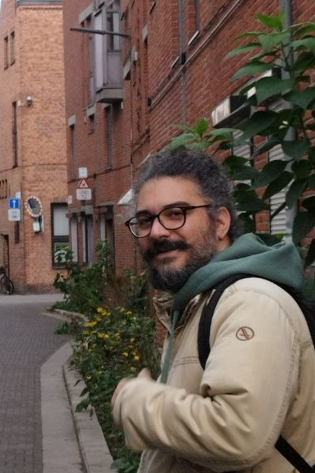
I am a Senior Robotics Software Engineer at Intermodalics in Leuven, Belgium. I currently work on localising autonomous forklifts against reflectors, inside a global team that builds mass-production forklifts for warehouses for KION Group.
Before that I was the architect and software integrator of the Horizon Europe project RoBétArmé at CERTH, collaborating with (now) Associate Professor Ioannis Costavelis, and a robotics research engineer at the Aristotle University of Thessaloniki, under the coordination of (now) Assistant Professor Antonis Dimitriou. I hold a diploma and a PhD in Electrical and Computer Engineering from AUTh, and a Master's degree in Control and Robotics from KTH.
I have worked on Localisation and Pose Estimation, SLAM, Autonomous Navigation, Control and Computer Vision, and on task planning with Behaviour Trees. In the past most of my time went into integration, deployment and troubleshooting of ROS and ROS 2 systems on real robots.
I chose the academic plus software engineering path on purpose. I wanted to bridge two kinds of engineer: the academic whose code stops at MATLAB, and the software engineer whose theory stops at the code.
News
- Feb 2026: Joined Intermodalics in Leuven, BE, as a Senior Robotics Software Engineer, working on autonomous forklifts for KION Group.
- Jan 2026: RoBétArmé deployed at EDF's Hermillon hydroelectric plant with Bouygues Construction, after two years of integration between the 12 partners.
- Oct 2024: Presented single-authored paper CBGL: Fast Monte Carlo Passive Global Localisation of 2D LIDAR Sensor at IROS 2024, one of 18 single-authored papers out of 1,587.
- Sep 2023: Joined CERTH as Integration and Deployment Engineer for the Horizon Europe project RoBétArmé.
- Jun 2023: Defended my PhD thesis 2D LIDAR sensor pose estimation via scan-to-map-scan matching at AUTh.
- Mar 2023: The CULTUREID social robot started guiding visitors at the Archaeological Museum of Thessaloniki, now engaging 2,000+ visitors a year.
- Oct 2022: Presented FSM: Correspondenceless scan-matching of panoramic 2D range scans at IROS 2022.
- Mar 2022: Single-authored paper on correspondenceless scan-to-map-scan matching published in Robotics and Autonomous Systems.
- 2021: RELIEF fleet localisation accuracy raised by 50%, down to centimetre level.
- 2015: 2nd place in the Autonomy class of RoboCup Rescue with the PANDORA robotics team.
Demos


Experience
-
Senior Robotics Software Engineer, IntermodalicsLocalisation of autonomous forklifts against reflectors, within a global team building mass-production forklifts for warehouses for KION Group.
-
Integration and Deployment Engineer, CERTHArchitect and integrator of RoBétArmé (Horizon Europe, GA 101058731). 12 software teams, 50+ dockerised ROS 2 packages, three mobile platforms. Cut deployment time by more than 10x across the additive manufacturing fleet.
-
Robotics Research Engineer, Aristotle University of ThessalonikiSole robot integrator for RELIEF (RFID inventorying with ground and aerial robots) and CULTUREID (a museum social robot).
-
Teaching Assistant, DD2380 Artificial Intelligence, KTH
-
Computer Vision Engineer (volunteer), PANDORA Robotics Team, AUTh
-
Database Designer and Developer, Egnatia Motorway S.A.
-
Telecommunications Engineer, OTE S.A.
Software

gitrl-f
gitrl-z
mdeus
hitch_estimation_apriltag_array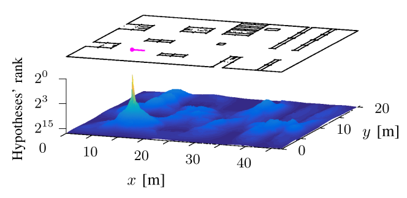
cbgl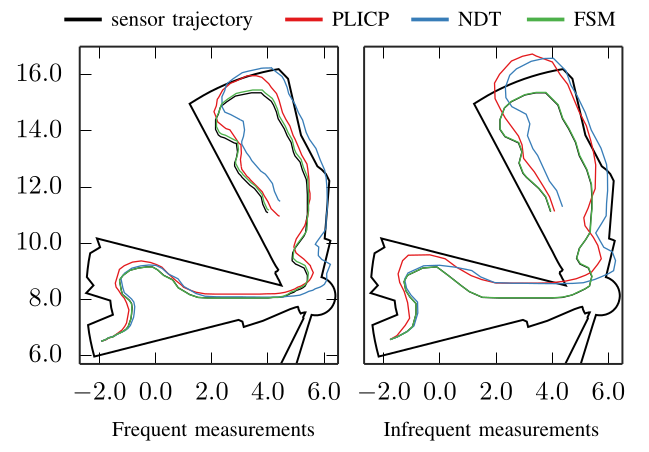
fsm-localisationlama-odomlama-odompointcloud_conversionspointcloud_conversionspandora_vision_hole_detectorpandora_vision_hole_detectorDistinctions
One of 18 single-authored papers out of 1,587 presented at the 2024 IEEE/RSJ International Conference on Intelligent Robots and Systems.
As a member of the PANDORA robotics team of AUTh.
In the 2013 graduating class of Electrical and Computer Engineering.
Publications
You can also find my articles on my Google Scholar profile.
-
CBGL: Fast Monte Carlo Passive Global Localisation of 2D LIDAR Sensor
Alexandros Filotheou. 2024.
2024 IEEE/RSJ International Conference on Intelligent Robots and Systems (IROS).
One of 18 single-authored papers out of 1,587 presented
proceedings | code | video -
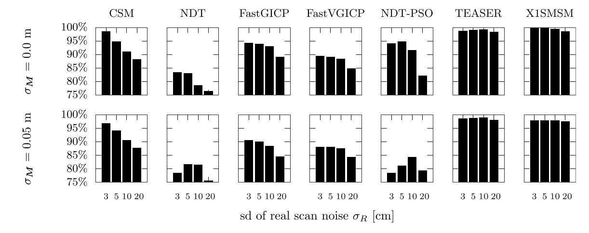
Correspondenceless scan-to-map-scan matching of 2D panoramic range scans
Alexandros Filotheou, Andreas L. Symeonidis, Georgios D. Sergiadis, Antonis G. Dimitriou. 2023.
Array, vol. 18.
journal -
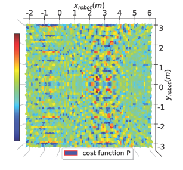
Real-Time Global Localization of a Mobile Robot by Exploiting RFID Technology
Anastasios Tzitzis, Alexandros Filotheou, Aristidis Raptopoulos Chatzistefanou, Traianos Yioultsis, Antonis G. Dimitriou. 2023.
IEEE Journal of Radio Frequency Identification.
journal -
FSM: Correspondenceless scan-matching of panoramic 2D range scans
Alexandros Filotheou, Georgios D. Sergiadis, Antonis G. Dimitriou. 2022.
2022 IEEE/RSJ International Conference on Intelligent Robots and Systems (IROS).
proceedings | code | ROS package | video -
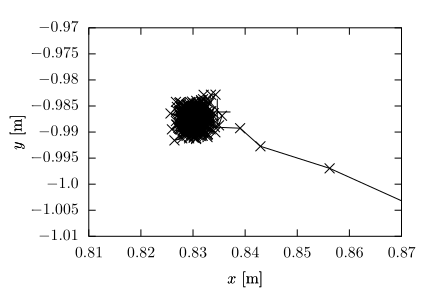
Correspondenceless scan-to-map-scan matching of homoriented 2D scans for mobile robot localisation
Alexandros Filotheou. 2022.
Robotics and Autonomous Systems, vol. 149.
journal -
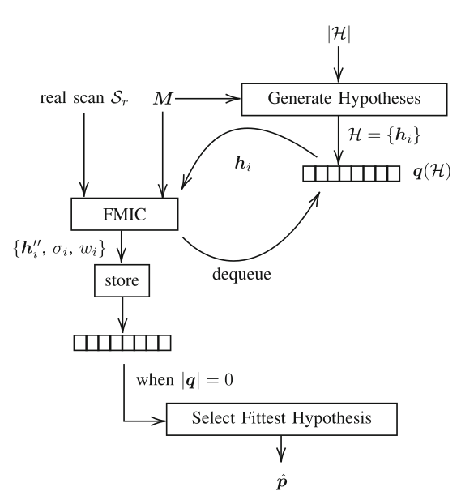
Passive Global Localisation of Mobile Robot via 2D Fourier-Mellin Invariant Matching
Alexandros Filotheou, Anastasios Tzitzis, Emmanouil Tsardoulias, Antonis Dimitriou, Andreas Symeonidis, George Sergiadis, Loukas Petrou. 2022.
Journal of Intelligent & Robotic Systems, vol. 104.
journal -
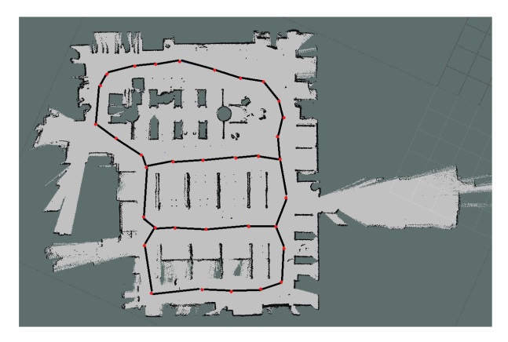
Localization, Tracking and Following a Moving Target by an RFID Equipped Robot
George Mylonopoulos, Aristidis Raptopoulos Chatzistefanou, Alexandros Filotheou, Anastasios Tzitzis, Stavroula Siachalou, Antonis G. Dimitriou. 2021.
2021 IEEE International Conference on RFID Technology and Applications (RFID-TA).
proceedings -
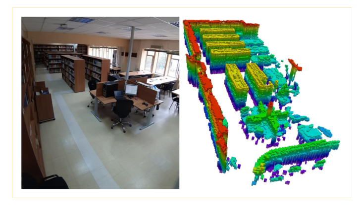
Autonomous Robots, Drones and Repeaters for Fast, Reliable, Low-Cost RFID Inventorying & Localization
Antonis Dimitriou, Anastasios Tzitzis, Alexandros Filotheou, Spyros Megalou, Stavroula Siachalou, Aristidis R. Chatzistefanou, Andreana Malama, Emmanouil Tsardoulias, Konstantinos Panayiotou, Evaggelos Giannelos, Thodoris Vasiliadis, Ioannis Mouroutsos, Ioannis Karanikas, Loukas Petrou, Andreas Symeonidis, John Sahalos, Traianos Yioultsis, Aggelos Bletsas. 2021.
2021 6th International Conference on Smart and Sustainable Technologies (SpliTech).
proceedings -
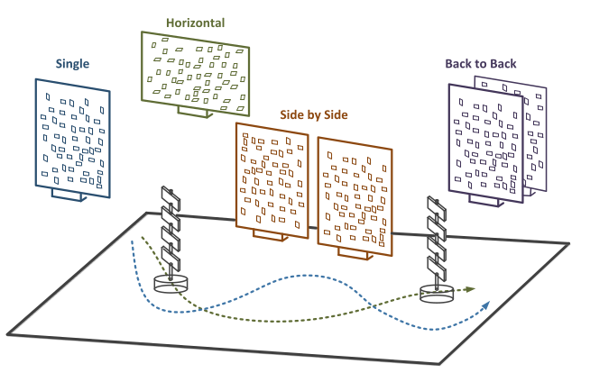
Trajectory Planning of a Moving Robot Empowers 3D Localization of RFID Tags With a Single Antenna
Anastasios Tzitzis, Spyros Megalou, Stavroula Siachalou, Tsardoulias G. Emmanouil, Alexandros Filotheou, Traianos V. Yioultsis, Antonis G. Dimitriou. 2020.
IEEE Journal of Radio Frequency Identification, vol. 4.
journal -
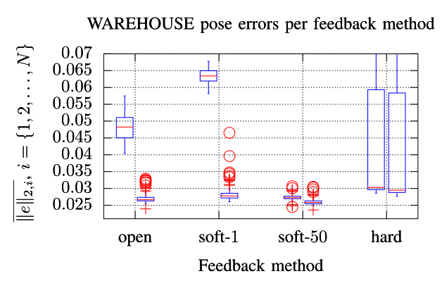
Pose Selection and Feedback Methods in Tandem Combinations of Particle Filters with Scan-Matching for 2D Mobile Robot Localisation
Alexandros Filotheou, Emmanouil Tsardoulias, Antonis Dimitriou, Andreas Symeonidis, Loukas Petrou. 2020.
Journal of Intelligent & Robotic Systems, vol. 100.
journal -
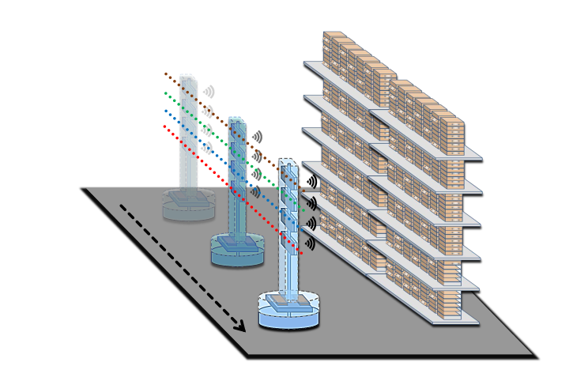
Real-time 3D localization of RFID-tagged products by ground robots and drones with commercial off-the-shelf RFID equipment: Challenges and Solutions
Anastasios Tzitzis, Alexandros Filotheou, Stavroula Siachalou, Emmanouil Tsardoulias, Spyros Megalou, Aggelos Bletsas, Konstantinos Panayiotou, Andreas Symeonidis, Traianos Yioultsis, Antonis G. Dimitriou. 2020.
2020 IEEE International Conference on RFID (RFID).
proceedings -
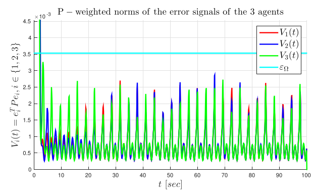
-
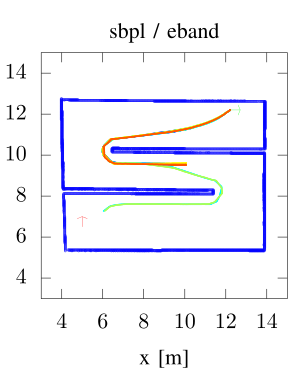
Quantitative and Qualitative Evaluation of ROS-Enabled Local and Global Planners in 2D Static Environments
Alexandros Filotheou, Emmanouil Tsardoulias, Antonis Dimitriou, Andreas Symeonidis, Loukas Petrou. 2020.
Journal of Intelligent & Robotic Systems, vol. 98.
journal -
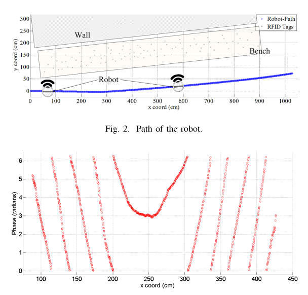
Phase ReLock - Localization of RFID Tags by a Moving Robot
Anastasios Tzitzis, Spyros Megalou, Stavroula Siachalou, Traianos Yioultsis, Athanasios Kehagias, Emmanouil Tsardoulias, Alexandros Filotheou, Andreas Symeonidis, Loukas Petrou, Antonis G. Dimitriou. 2019.
2019 13th European Conference on Antennas and Propagation (EuCAP). -
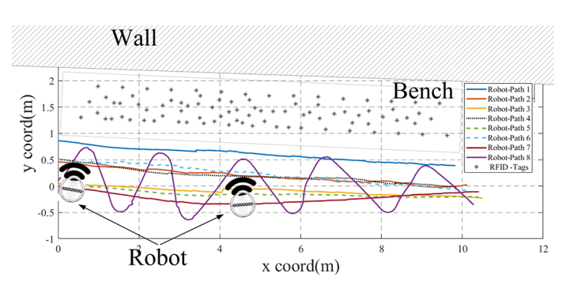
Fingerprinting Localization of RFID tags with Real-Time Performance-Assessment, using a Moving Robot
Spyros Megalou, Anastasios Tzitzis, Stavroula Siachalou, Traianos Yioultsis, John Sahalos, Emmanouil Tsardoulias, Alexandros Filotheou, Andreas Symeonidis, Loukas Petrou, Aggelos Bletsas, Antonis G. Dimitriou. 2019.
2019 13th European Conference on Antennas and Propagation (EuCAP). -
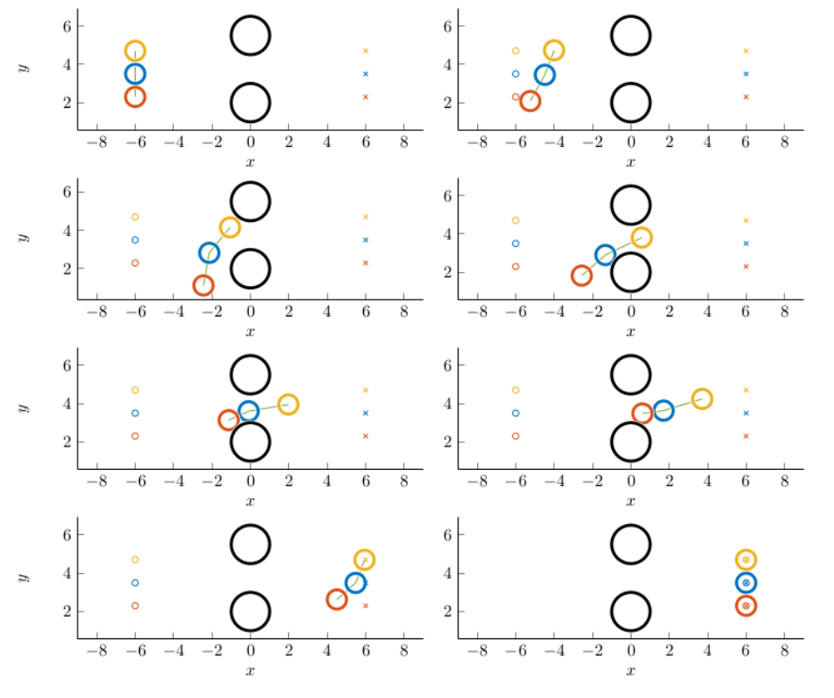
Decentralized Control of Uncertain Multi-Agent Systems with Connectivity Maintenance and Collision Avoidance
Alexandros Filotheou, Alexandros Nikou, Dimos V. Dimarogonas. 2018.
2018 European Control Conference (ECC).
proceedings
Education
-
PhD, Electrical and Computer Engineering2D LIDAR sensor pose estimation via scan-to-map-scan matching. Advisor: Prof. Georgios Sergiadis.
-
MSc, Systems, Control and RoboticsRobust Decentralized Control of Cooperative Multi-robot Systems: An inter-constraint Receding Horizon approach. Advisor: Prof. Dimos Dimarogonas.
-
Diploma, Electrical and Computer EngineeringMulti-label classification using Learning Classifier Systems. Advisor: Prof. Pericles Mitkas.